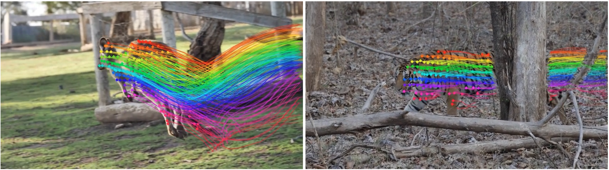
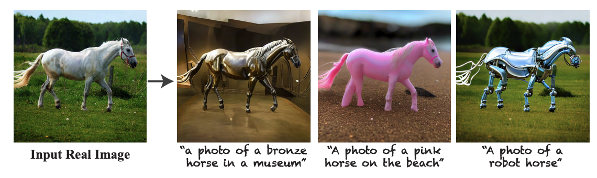
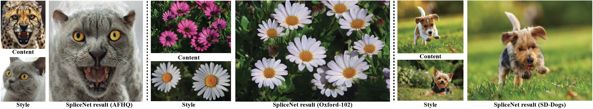
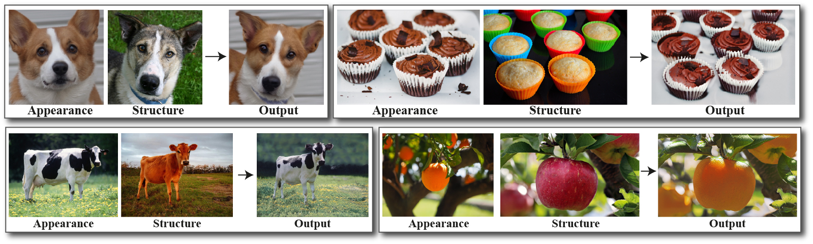

|
Narek Tumanyan I am a PhD student in computer vision at the Weizmann Institute of Science, advised by Prof. Tali Dekel. My research interests are in image and video generation, self-supervised learning, and interpreting vision foundation models for unveiling novel applications. I completed my Master's at the Weizmann Institute in Tali Dekel's lab, and received my Bachelor's degree at the American University of Armenia. Email / Google Scholar / Twitter / Github |
{kind=link}
Research |
|

|
DINO-Tracker: Taming DINO for Self-Supervised Point Tracking in a Single Video
Narek Tumanyan*, Assaf Singer*, Shai Bagon, Tali Dekel ECCV 2024 project page / arXiv / code We present a novel self-supervised method for long-range dense tracking in video, which harnesses the powerful visual prior of DINO. By combining test-time training on a single input video with the semantic representations of DINO, DINO-Tracker reaches SOTA in tracking across long occlusions. |
|

|
Plug-and-Play Diffusion Features for Text-Driven Image-to-Image Translation
Narek Tumanyan*, Michal Geyer*, Shai Bagon, Tali Dekel CVPR 2023 project page / arXiv / code / video We present a new framework for text-driven image-to-image translation that harnesses the power of a pre-trained text-to-image diffusion model. We observe and empirically demonstrate that fine-grained control over the generated structure can be achieved by manipulating spatial features and their self-attention inside the model. |
|

|
Disentangling Structure and Appearance in ViT Feature Space
Narek Tumanyan, Omer Bar-Tal, Shir Amir, Shai Bagon, Tali Dekel ACM TOG 2023 project page / arXiv We design a feed-forward model for real-time semantic appearance transfer that is directly conditioned on ViT features, allowing the model to utilize the powerful information they encode. |
|

|
Splicing ViT Features for Semantic Appearance Transfer
Narek Tumanyan*, Omer Bar-Tal*, Shai Bagon, Tali Dekel CVPR 2022 (Oral) project page / arXiv / code / video We present a method for semantically transferring the appearance of one natural image to another. We train a generator given only a single structure/appearance image pair as input. Our key idea is leveraging a pre-trained Vision Transformer as a semantic prior by deriving novel representations of structure and appearance from its feature space. |
Talks |

|
Voxel51 Computer Vision Meetup: Plug-and-Play Diffusion Features for Text-Driven Image-to-Image Translation |
|
This website was built using Jon Barron's homepage template. |